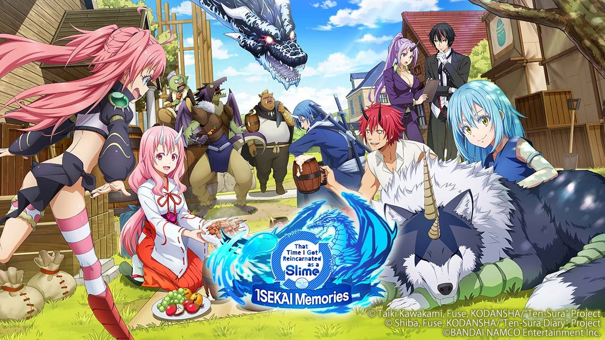

"That Time I Got Reincarnated as a Slime" is a captivating Japanese light novel and anime series that takes its audience on a thrilling and imaginative adventure. The story revolves around Satoru Mikami, an ordinary office worker who, after an unfortunate encounter, finds himself reincarnated in a fantasy world as a slime creature with extraordinary abilities.
As a slime, Satoru, who adopts the name Rimuru Tempest, discovers that he possesses a unique skill called "Great Sage," which grants him vast knowledge and analytical capabilities. With this newfound power, Rimuru embarks on a journey of self-discovery and exploration, determined to navigate the unfamiliar world and make the most of his new existence.
Throughout his adventures, Rimuru encounters a diverse cast of characters, both friend and foe. He forms alliances with various creatures, including powerful monsters, humans, and other slimes, gradually building a strong and unified nation known as the Jura Tempest Federation. As the leader of this evolving society, Rimuru strives to create a world where different species can coexist peacefully and prosperously.
The series delves into themes of friendship, trust, and the pursuit of a harmonious coexistence. Rimuru's interactions with different races and individuals showcase his diplomacy and empathy, as he seeks to understand and respect their unique perspectives and cultures. Alongside his companions, Rimuru faces numerous challenges, from territorial disputes and political struggles to formidable adversaries who threaten the peace he tirelessly works to establish.
The world of "That Time I Got Reincarnated as a Slime" is richly detailed, featuring a wide array of magical beings, enchanting landscapes, and intricate societal dynamics. The series blends elements of fantasy, action, and comedy, offering a delightful mix of intense battles, lighthearted humor, and moments of heartfelt emotion.
With its engaging storytelling, vibrant characters, and immersive world-building, "That Time I Got Reincarnated as a Slime" has captured the hearts of fans worldwide. It continues to captivate audiences with its thrilling narrative, thought-provoking themes, and the inspiring journey of Rimuru as he strives to shape a world where all beings can find their place and fulfill their potential.
